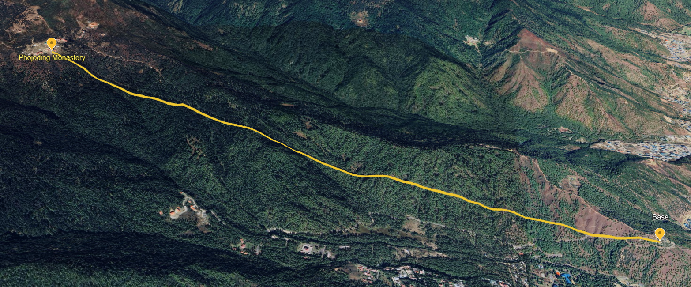
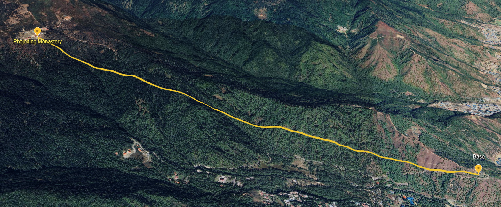

📋 Relevant Links
🎯 Problem Statement
Mission Objective: Deliver a 20KG rice bag to Phojoding Monastery, Thimphu, Bhutan starting from BBS Radio Tower, Thimphu, Bhutan using an autonomous drone.
Platform: Sabal 20 with Auto Mission capability

Platform: Sabal 20 with Auto Mission capability

⚙️ Proposed vs Implemented Configuration
| Component | Proposed | Implemented |
|---|---|---|
| System | EC 20.7 | EC 20.7 |
| Battery | 4x GenX 29Ah OR 4x MPower 30Ah | 4x GenX 29Ah |
| Blade | 990mm non foldable | 990mm non foldable |
| RPM | 1300 - 1330 | 1300 |
| RC (at base location only) | Futaba T10J | Futaba T10J |
| GPS | Holybro F9P or Here 4 or Neo 3 pro | Holybro F9P and Here 4 (without RTK base) |
| Comms | Taisync S band / QuadBand / L band | Comms 1: Taisync QuadBand (small white omni antenna x2 Parallel) Comms 2: RFD at 30db (separate power) (base RFD antenna x2 Perpendicular) |
| GCS | Getac at base with tracker + omni antenna | Base: Getac with Taisync QuadBand sector + omni Monastery: Lenovo ideapad with RFD at 30db |
🔍 Recce Tests Conducted
- GPS module selection
- Spectrum analyzer test
- Wind speed check
- Visual site survey
- RTK survey for coordinates and AMSL
📍 Location Coordinates
| Location | Latitude | Longitude | AMSL (m) |
|---|---|---|---|
| Monastery | 27.4890358098142 | 89.574760012183 | 3580.6 |
| Base | 27.4835963118182 | 89.6237514837643 | 2644.65 |
🗺️ Mission Planning
📍 Bhutan Demo Mission Flight Path

Mission planning and flight path visualization
📅 Day-wise Tasks, Issues, Suggestions
| Day | Tasks | Issues | Suggestions |
|---|---|---|---|
| 1 |
• New base recce (BBS Radio tower) • GPS Nsats, dop, acc test • RTK positioning • Taisync quadband and S band SNR test |
I1 | S1, S2 |
| 2 |
• Ground test of pitot tube • Ground test of parachute • Payload drop test • Basic craft performance, CG, param, GPS tests |
I2 | S3, S4, S5, S6 |
| 3 | • Hover tests with payloads for current and temperature | I3 | S7 |
| 4 | • Auto missions | I4 | S8 |
| 5 | • Hover tests with payloads for current and temperature | I5 | S9 |
| 6 | • Few tests, RFD configuration | I6 | S5, S10 |
| 7 | • Auto mission to monastery with 1kg payload and lots of altitude margin | I7, I8, I9 | S11, S12, S13 |
| 8 | • Final demo of 10kg rice bag delivery to monastery | I10, I11, I12, I13 | S11, S13, S15, S16 |
⚠️ Issues Encountered
I1 Documentation - Taisync setup and configuration took time, reading and understanding webview page was difficult
I2 Documentation - Pitot tube wiring took time due to missing documentation
I3 Hardware - Motor temperature differences 10-20°C (head < tail), current consumption differences 10-20A (head > tail)
I4 Safety - Unsafe missions performed over civilian houses and walkways, craft is heavy and parachutes are unreliable
I5 Hardware - Rain caused delays
I6 Firmware Planning - Tracker removal required as RFD needed UART port (CONS port doesn't support RFD currently)
I7 Documentation - Uncertainty regarding in-flight mission updates and set waypoint, required additional tests
I8 Hardware - RC reconnection issue during landing, no control response
I9 Resources Safety - Difficulty determining proper altitude margin for final mission, at 30m hover, hard to assess craft height relative to flag poles at monastery
I10 Sensor Planning - Craft landed instead of hovering at 5m due to altitude error, mission ended with craft disarmed (ASML was taken from GPS, but barometer was used for flight, also altimeter should have been used since barometer aren't reliable)
I11 Sensor - Craft proximity to flag poles at monastery due to barometric altitude error
I12 Firmware - No failsafes used since RTL was not viable, Smart RTL untested and therefore not implemented
I13 Sensor Planning - Craft landing position had a lot of offset to the measured position
💡 Suggestions
S1 Documentation - Create comprehensive documentation for all comms modules: antenna setup, web interface, app interface, configuration, parameter setup, data interpretation, FAQ, common issues
S2 Documentation - Create dummy cube setup documentation with required accessories list
S3 Documentation - Create module documentation (pitot tube, GPS, ESC telem setup, etc.) with setup/teardown procedures from scratch and relevant resource links
S4 Hardware Safety - Parachute system needs improvement: carbon fiber plate tolerance issues, servo pin jamming, tube cover requiring tape fitment. Create stretchable fabric cover for ground tests instead of zip ties
S5 Hardware Firmware - Enable CONS port for RFD as secondary comms (with dedicated power supply for 30db operation)
S6 Procedure Software - Create a basic python TKinter application for standard sequential test procedure: ground values check, preflight checks, module function verification, stabilize response, log analysis, loiter response, auto mission validation (all these tests, user enterable data, log publishing option, flight summary generation, things like analysis can be manual, but should follow steps specified here) (It includes developing a simplified automated log analyzer following flight ops review sheet pattern)
S7 Documentation Procedure - Implement the above mentioned unified documentation system with centralized flight log analysis server storing all records, analysis, and operator responses for easy reference (uses the same log analyses tool, and streamlined procedure tool, each log simply will always be accompanied by a metadata file in JSON format maybe, which is created by our software) (consider all flights, demos, tests, crashes)
S8 Safety - Implement strict policy: NO missions over areas with unaware civilians. All affected individuals must be notified and consent to risk
S9 Hardware - Design rain cover for drone (waterproof tarp is inconvenient)
S10 Hardware - Develop waterproof communications housing for weather protection of sensitive electronics.
S11 Documentation - Create auto mission features documentation: in-flight updates, set waypoint, mission resume procedures, negative altitude mission and parameters
S12 Hardware - RC system requires testing and troubleshooting for reconnection issues
S13 Hardware Resource - Consider long range FPV quad or FPV fixed wing for site and flight analysis and live tracking
S14 Hardware Firmware - Implement altimeters (minimum 10-20m range, radar preferred), also look into the following parameter EK3_OGN_HGT_MASK
S15 Hardware - Maybe add omni-directional proximity sensors for collision avoidance
S16 Documentation - Test and document Smart RTL for demo mission planning reference
S17 Firmware - wp_nav feature like "heading follow next waypoint" instead follow at 0/180 degree to the waypoint (specific to tandem systems)
S18 Customer - Mast is very inconvenient, should be something like tripod (would be fantastic if we have satcom?)
S19 Hardware - Too much motor oiling in comparison to motor documentation.
S20 Hardware - Test different perpendicular antenna placement for craft (hopefully non parallel setup)